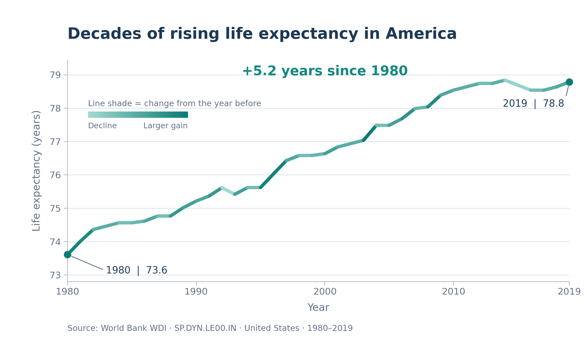
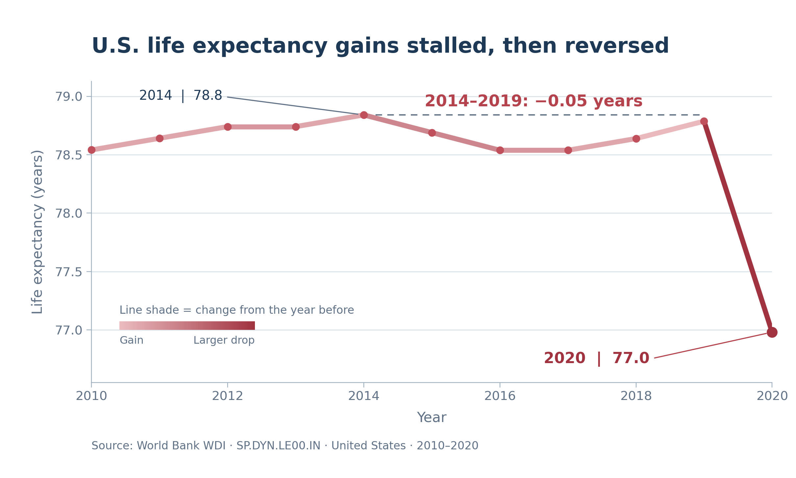

Proposition: Life expectancy in the United States has shown sustained improvement since 1980.
Each design decision below is scored from −2 (fully deceptive) to +2 (fully earnest).
FOR the Proposition

Design Decisions and Rationale:
- Selective Time Range (−1.5): We chose to display data from 1980 to 2019 and did not include 2020. This highlights four decades of increasing life expectancy while excluding the decline in 2020 making the trends appear more consistently positive. Although including 2020 would provide a more complete picture, we selected 2019 to strengthen our supporting argument. This choice is somewhat deceptive as it omits information that challenges the proposition.
- Calculated Annual Changes and Color Encoding (+0.5): We calculated the year over year change in life expectancy and used that to determine the color of individual line segments. Darker green parts indicate that there is a greater annual improvement while lighter segments represent smaller gains or declines. This adds another dimension to the visualization without requiring additional charts. We considered using a single color line but chose varying color intensity to emphasize periods of faster progress. The transformation is mathematically accurate but because the declines are drawn in the palest shade, they fade into the background. We scored this +0.5 rather than higher because the color emphasis selectively reinforces positive trends.
- Truncated Y-Axis (−1): We used a y-axis beginning near 73 years rather than zero to emphasize changes in life expectancy over time. This makes the increase from 73.6 to 78.8 years more visually noticeable and strengthens the visual of long term progress. A zero starting axis would make these differences appear much smaller. Although truncated axes are common for line charts, this particular scale was chosen partly for its persuasive effect.
- Persuasive Title and Annotation (+1): We titled the visualization "Decades of Rising Life Expectancy in America" to show our intended takeaway. We also included the "+5.2 years since 1980" annotation and labeled the starting and ending values to help readers visualize and understand the magnitude of improvement in life expectancy. These annotations are also based on actual calculations and provide context without overcrowding the visualization. We chose this approach over labeling every data point because it focuses attention on the most meaningful comparison.
AGAINST the Proposition

Design Decisions and Rationale:
- Narrower Time Range (−1): We limited the visualization to 2010 through 2020 to focus on the more recent stagnation and decline in life expectancy. This makes it easier for readers to recognize that progress was not consistently sustained during the final decade of the 1960–2020 dataset. We also considered showing the entire period, but the earlier decades of improvement would make the recent decline less appealing. This filtering is deceptive because it removes the context of long term improvement.
- Truncated Y-Axis (−1.5): We narrowed the vertical scale to approximately 76.5–79.1 years, making relatively small changes appear more dramatic. This emphasizes the stagnation during the mid 2010s and the sharp decline in 2020. A wider scale would make the trend appear less severe, but we selected the narrower range to strengthen our opposing argument. The actual values remain accurate although the scale influences the reader's perception of their magnitude.
- Calculated Annual Changes and Color Encoding (+0.5): We calculated the difference in life expectancy between consecutive years and used this calculated field to color the line segments. Darker red represents larger negative changes as it draws attention to periods of decline especially between 2019 and 2020, and we added a small key that explains the shading. We considered using a uniform red line, but the coloring of the slope makes the most substantial reversals stand out more clearly. The encoding accurately reflects each year's change, but years with gains are drawn in pale pink so they fade into the background, which is why we scored it +0.5 rather than higher.
- Persuasive Title (+1): We used the title "U.S. Life Expectancy Gains Stalled, Then Reversed" to emphasize the drop in long term progress. The title accurately describes 2010 to 2020, but it tells readers what to conclude before they look at the data. We considered a neutral title such as "U.S. Life Expectancy, 2010–2020," but it would leave the argument entirely to the reader.
- Peak-Anchored Plateau Annotation (−1): We annotated the change from 2014 to 2019, a decrease of about 0.05 years, and drew a dashed line at the 2014 level to show that 2019 never returned to it. We chose 2014 because it is the highest value between 2010 and 2019. Also starting from any other year in that range would show a small gain by 2019. The calculation is correct, but placing it at the peak makes a flat period look like a decline so we consider this choice deceptive. We still preferred it to labeling every annual fluctuation because it gives a concise summary that supports our argument that progress had stalled before the sharp decline in 2020.
The Full Picture
Both charts above use the same World Bank series. Switch views below to apply each chart's time window and y-axis to the full record, which the World Bank now reports through 2024.
From 1980 to 2024, life expectancy rose 5.3 years overall. The 2.5-year drop in 2020–21 was fully recovered by 2024.
Leaves out 2020–2024, including the 2.5-year drop in 2020–21.
Leaves out the 4.9 years gained from 1980 to 2010 and the recovery to a record 78.9 in 2024.
Show the data
Final Reflection
Throughout this project, we learned how much the design of a visualization can influence the way people interpret the same dataset. One of the more straightforward parts was identifying the overall trends in U.S. life expectancy, since the data clearly showed both long term improvement and recent stagnation. However, the more difficult part was figuring out how to make two opposing arguments using the same data without changing any of the actual values. We experimented with different time ranges, axis scales, annotations, and color encodings to emphasize certain patterns. We found that even relatively simple design choices could significantly change the message communicated by a visualization.
What surprised us most was how convincing both perspectives could be despite using the exact same World Bank data. By ending our supporting visualization in 2019, we were able to emphasize decades of improvement. On the other hand, focusing on 2010–2020 in our opposing visualization made the stagnation and decline much more noticeable. We also found that coloring line segments according to annual changes helped direct attention toward specific trends without needing additional charts. This showed us that deception in visualization is not only caused by manipulating data or presenting incorrect information. Instead, it can happen by selectively presenting accurate information in ways that encourage readers to reach a particular conclusion. We saw this again after finishing our charts as the World Bank's latest release extends to 2024 which was when U.S. life expectancy reached a record 78.9 years. Even our opposing chart's end year is able to hide that recovery, so every time window we chose was part of the argument.
After completing this project, we would define ethical data visualization as presenting information in a way that is accurate, understandable, and transparent about the decisions that influence its interpretation. We believe persuasive design choices are acceptable when they help readers identify meaningful patterns without completely misrepresenting the data. However, those choices become misleading when important context is intentionally excluded or when visual scales exaggerate trends enough to create the wrong impression. Our own visualizations demonstrate how difficult it can be to draw a clear boundary between persuasion and deception, since many of the same techniques can serve both purposes. Ultimately, we learned that creating an ethical visualization requires considering not only whether the data is accurate, but also whether the overall message gives readers a fair understanding of what the data represents.
Data source: World Bank, World Development
Indicators, Life expectancy at birth, total (years)
(SP.DYN.LE00.IN), United States. The FOR and
AGAINST charts use 1980–2020; The Full Picture uses the World
Bank's release through 2024.